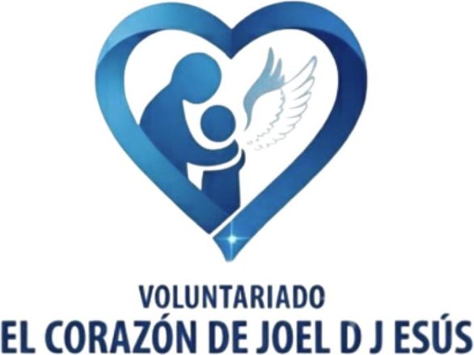

Asociación civil · Voluntariado · Jalisco, México
Reparamos con oro lo que la vida rompió demasiado pronto.
Protegemos y acompañamos a niñas y niños en situación vulnerable —en hospitales, escuelas y comunidades— restituyendo su dignidad, su voz y su futuro.
«Nuestra niñez en situación vulnerable nos necesita»
Nuestra trayectoria en cifras
Quiénes somos
Paz que repara, no solo paz que calma
Desde 2015 trabajamos bajo el enfoque de prácticas de paz como restitución humana: no basta con detener el daño, hay que devolverle a cada niña y a cada niño su dignidad, su lugar en la comunidad y la confianza en su futuro. Como en el arte japonés del kintsugi, creemos que lo reparado con cuidado puede valer más que lo que nunca se rompió.
Qué hacemos
Cuatro caminos, un mismo destino
Cada programa atiende un momento distinto de la vida de una niña o un niño en situación vulnerable.
El trabajo en imágenes
Esto no es una promesa: ya está pasando
Cada fotografía protege la identidad de las niñas y los niños: aquí verás manos, espaldas y donaciones — nunca el rostro de un menor de edad.
Transparencia
Rendimos cuentas, no solo pedimos confianza
Publicamos boletines periódicos con nuestras acciones, el destino de cada donación y el impacto logrado. Quien dona merece certeza, no promesas.
Historias de impacto
Lo que se repara, florece
Protegemos a quienes servimos. Todas las historias se publican con consentimiento informado y sin ningún dato que permita identificar a una niña o un niño. Nunca publicamos nombres reales ni fotografías de rostros de menores de edad.
Cómo ayudar
Su niñez no puede esperar a que sobre el tiempo
Puedes donar, sumarte como voluntario o construir una alianza institucional. Cada camino termina en el mismo lugar: una niña o un niño que recupera su futuro.